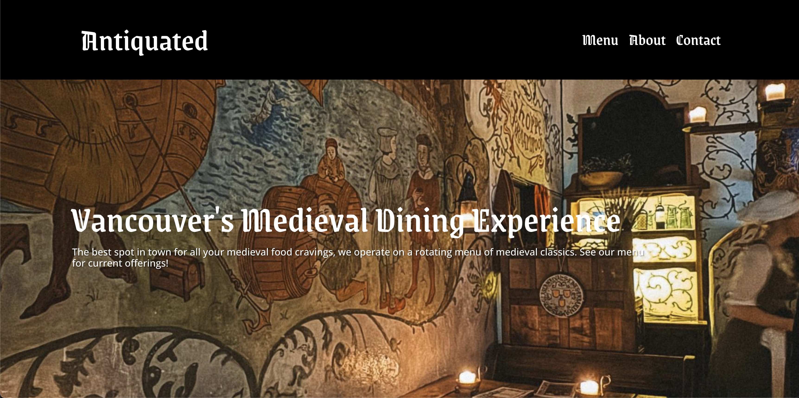
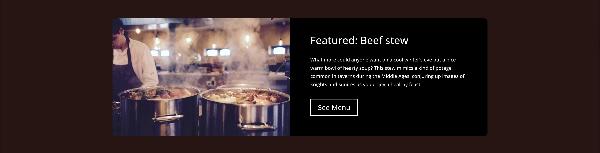
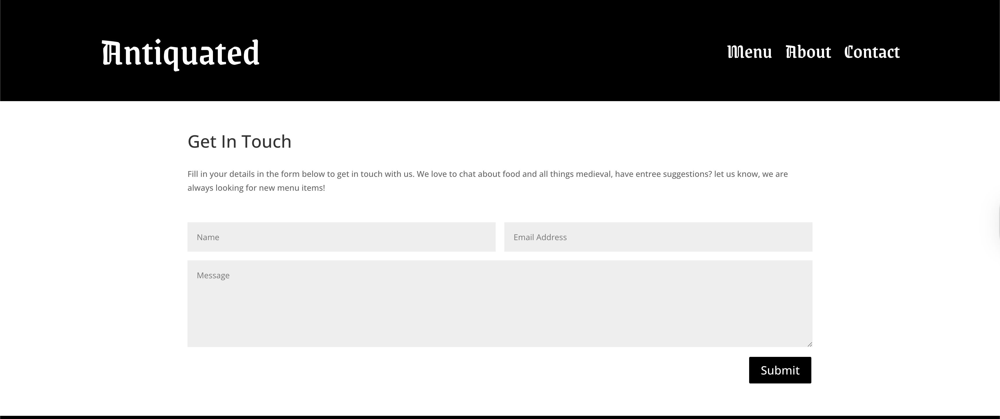

Homepage
Branding was built around the font Grenze Gotisch to attain a medieval feel.
Stock images were used for this project so the selection was limited, in a real world scenario i would like to include some high quality photography.

Menu
The real reason people come to a restaurant website
Seen above are the feature card on the homepage and the Menu. The intention of the feature card is to bring users from the homepage to the menu page, a secondary way to get to the menu. The unique food offerings is a major part of this brand so having multiple routes to the menu was important to me. The menu itself was kept quite simple with the items speaking for themselves.

Contact Page
Seen above is the contact page including a contact form, a standard for almost any website and crucial for remaining accesible. this form is quite simple but for a restaurant most customers are going to be calling before they enter a message here. the main function of this contact page would likely be used for group bookings.